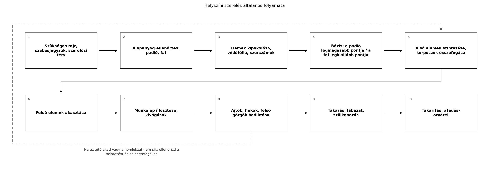

A megrendelő a bútorait lapra szerelve, fóliázva, kartonba csomagolva kapja meg. A gyárban tökéletesre állított ajtók és fiókok semmit sem érnek, ha a helyszínen rosszul szerelik össze a bútort. A konyhabútor-sor alatt a padló soha nincs teljesen síkban, a fal szinte soha nincs pontosan derékszögben. Ha ezt a szerelő nem kezeli, az ajtók összeakadnak, a munkalap feszül vagy eltörik, a beépített szekrény ajtaja folyton visszagurul. A helyszíni szerelés az utolsó, legkritikusabb gyártási művelet: itt dől el, hogy a vevő hibásnak vagy értékesnek látja-e az elkészült bútort.
Képzelj el egy konyhát, ahol az alsószekrény-sor bal oldala -rel, a jobb oldala -rel magasabban áll, a felső szekrények előredőlnek, a pulton összegyűlik a víz. Most képzeld el ugyanezt a konyhát vízmértékkel kiállítva, síkba állított ajtókkal, egyenletes hézagokkal és falhoz rendesen rögzítve: ugyanazok az elemek, mégis teljesen más minőségérzetet adnak. A különbség a helyszíni szerelés tudása.
Definíció. A helyszíni szerelés a bútoripari vagy belsőépítészeti termékek vevő ingatlanában történő összeállítása, beállítása, rögzítése és átadása.
Szabály. A helyszíni szerelés sorrendje mindig a bázissíkok meghatározásával kezdődik. A vízszintes bázis a padló legmagasabb pontja, a függőleges bázis a fal legkiállóbb pontja. Ha ezt kihagyod, a bútorod minden hibája a fal és padló hibáját fogja követni. (Ezt a logikát a Rögzítéstechnika: falba, padlóba, mennyezetre alfejezetben tanultuk az alapanyag-azonosításnál; most a bútor belövésére alkalmazzuk.)
Szabály. Rajz–anyag–művelet hármas. Mielőtt bármit felfúrsz, nézd meg a felmérési rajzot, a szabásjegyzéket és a szerelési dokumentációt. A helyszíni szerelő a tervet hajtja végre, de ha a terv nem egyezik a helyszín valós méreteivel, állj meg, és jelezz a megrendelőnek vagy a műhelynek. (Lásd: Szerelési dokumentáció értelmezése és készítése; az összeállítás megszervezése.)
Definíció. A szintezés az elemek vízszintes síkba állítása állítható lábakkal, alátétekkel vagy szerelőékekkel. A függőzés az elemek függőleges (vízmérték szerinti) beállítása.
Szabvány. A bútorok helyszíni szereléséhez használt rögzítőelemek kiválasztásakor a falazat típusát kell alapul venni. Betonba, tömör téglába, pórusbetonba vagy gipszkartonba más-más dübel és csavar való. A gyártói teherbírási táblázatok az irányadóak. (Forrás: gyártói beépítési útmutatók; ellenőrizendő: az adott rögzítőelem aktuális engedélye.)
A Csomagolás, szállítás és a helyszíni szerelés előkészítése alfejezetben tanultak szerint először vizsgáld át a csomagokat, és védd a padlót. A konyha szerelését általában a felső szekrényekkel kezdjük, hogy alul még szabadon tudjunk dolgozni. A munkalapot mindig utoljára helyezzük fel, hogy a gépészeti kivágásoknál ne akadályozzon. Egyes szerelők az alsó sort állítják be előbb, mert a felső szekrények magassága attól függ; mindkét sorrend elfogadható, ha bizonytalan vagy, kövesd a gyártói szerelési utasítást.
lépések:
1. Csomagold ki az alsó elemeket.
2. Keresd meg a padló legmagasabb pontját (lézer vagy hosszú vízmérték).
3. Állítsd a legmagasabb ponton álló elem lábait a legalacsonyabb, még állítható pozícióba.
4. Szintezd ehhez az elemhez a többi elemet.
5. Fogd össze a korpuszokat, majd állítsd be az ajtókat.A legmagasabb pont meghatározása azért fontos, mert ha a legalacsonyabb ponthoz állítasz, a többi elemen elfogy az állítási tartalék, és alá kell tenni. Az állítható lábak tipikus állítási tartománya a gyártótól függ (általában , de ez ellenőrizendő adat).
Számítás. Ha a munkalap vastagsága , a konyha teljes magassága a padlótól a munkalap tetejéig , akkor a korpuszmagasság és a láb együttes magassága . Ha a korpusz magas, a lábaknak -t kell kiadniuk.
A felső szekrényeket akasztósínre vagy akasztóvasalatra kell függeszteni, nem közvetlenül a falba fúrt csavarral. A sínt a fal legmagasabb pontján, vízmértékkel fúrd fel. A felső szekrény hátlapján lévő akasztókat úgy állítsd be, hogy a szekrény függőben legyen, és a homlokzata a szomszédos elemekkel egy síkba kerüljön. A szekrényeket egymáshoz is rögzíteni kell (korpuszösszekötő csavarral), hogy a sor együtt mozogjon.
Figyelem. Ha a felső szekrény alá munkalap vagy páraelszívó kerül, ellenőrizd a gyártó által megadott minimális távolságot. Villany- és gázbekötést csak szakember végezhet.
A munkalapot először szárazon a helyére kell tenni. Ha a fal nem sík, a munkalapot a falívhez kell igazítani. Ezt beszúrással vagy hézagmásolóval (kontúrmásolóval) végezzük. A gyári élt a fal felé igazítsuk; ha az él túl hosszú, kézi körfűrésszel finoman vágjuk le, a vágásélt szilikonnal vagy élzáró csíkkal tömítsük. A főzőlap vagy mosogató kivágását a gyártói beépítési sablon szerint készítsük el, szúrófűrésszel. A kivágás élét hőálló szilikonnal vagy a gyártó által előírt tömítéssel kezeljük. (A gyártói sablonok méretei a típustól függenek; ellenőrizendő: gépkönyv, beépítési útmutató.)
A hézagmásolót (kontúrmásolót, körzőt) a legnagyobb mért hézagra állítod: a hegye a falon csúszik, a ceruzája a munkalapra rajzolja a fal ívét. A vonalig levágott munkalap ezután a fal legkiállóbb pontjáig hátracsúszik, és a teljes hosszon a falhoz simul.
A lábazati elemeket a padlótól a korpusz aljáig takarják. A lábazatot a padló egyenetlenségeihez kell illeszteni; ehhez gyakran alulról le kell vágni. A takarólécek (pl. a fal és a munkalap között) elrejtik a tágulási hézagot. Takarólécezett, falléces csatlakozásnál a tágulási hézag legyen (tájékoztató, ellenőrizendő: munkalapgyártói beépítési útmutató), a falléc takarja; beszúrt, szilikonnal zárt csatlakozásnál a hézag legfeljebb kb. . A hézag azért kell, hogy a fa vagy lapanyag dolgozhasson anélkül, hogy feszülne. A takarólécet ne ragaszd két oldalon túl mereven, hogy a hézag mozoghasson.
A beépített szekrény jellemzően a Beépített bútorok elhelyezése és gyártása: konyhabútor, gardrób alfejezetben tanult gyártási elv szerint készül: a fal, padló, mennyezet eltéréseit takarólécekkel, állítható lábakkal és gyártási hézaggal kezeljük.
Lépések:
Példa. Ha a padló bal oldala -rel alacsonyabb, mint a jobb oldala, a tolóajtó bal oldalán a vezetőt alá kell tenni -rel, vagy az alsó görgő bal oldalát ki kell engedni, hogy az ajtó ne guruljon balra. A konkrét állítás a vasalat típusától függ, ezért mindig a gyártói leírást nézd meg.
A belsőépítészeti falpanel jellemzően tömörfa vagy lapszerkezetű elem, amelyet a falra szerelünk. A szerelés előtt vezetékkeresővel kell ellenőrizni a falat. A panel súlyától függően kell a dübelt és csavart kiválasztani; a Rögzítéstechnika: falba, padlóba, mennyezetre alfejezetben tanult teherbírási elvek szerint.
Szabály. A falpanel mögött hagyjunk szellőzőhézagot (tájékoztató érték), különösen, ha a fal vizes vagy páraérzékeny. A hézagot alul és felül szúnyoghálóval vagy szellőzőráccsal zárjuk le, hogy a levegő átjárhassa.
A belsőépítészeti pult (pl. recepciós pult) gyakran nehéz, egyedi méretű. A szerelésnél az alapsíkot az aljzat legmagasabb pontja adja. A pultot a falhoz kell húzni, de a munkalap és a fal közötti hézagot takaróléccel vagy szilikonnal zárjuk le. A pult felső részét nem szabad mereven a falhoz csavarozni, ha az anyag mozoghat; használjunk rugalmas rögzítőfület vagy szilikonos ágyazást.

Számítás. Egy konyha alsó sora a felmérés szerint hosszú. Lézeres szintezővel mérve a lézersík a padló felett a bal oldalon , a jobb oldalon -re van, azaz a bal oldal -rel alacsonyabb (a jobb oldal a padló legmagasabb pontja). A szekrények korpuszmagassága , a munkalap vastagsága . A kívánt munkalap-felső magasság (a főzőlap beépítési adataihoz igazodva). Milyen magasra kell állítani a lábakat a két oldalon?
Példa. A munkalap beszúrása a falhoz. A fal a munkalap hossza mentén legfeljebb -rel tér el a sík vonaltól: a munkalap a bal oldalon a falhoz ér, a jobb oldalon hézag van. A lapot a falhoz toljuk, a hézagmásolót (beszúrókörzőt) a legnagyobb hézagra, -re állítjuk, és a fal vonalát átmásoljuk a hátsó élre. A bal oldalon a vonal -re, a jobb oldalon -re fut a hátsó éltől; a vonalig gyalulunk vagy marunk, majd a lapot a falhoz toljuk. A munkalap mélysége így a bal oldalon -rel kisebb lesz, ezt az elülső túlnyúlásnál figyelembe kell venni. (Tájékoztató érték, a pontos menetet a gyártói utasítás és a helyszíni sablon adja.)
Technológiai lap.
Cél: Alsószekrény-sor szintezése és falhoz rögzítése konyhabútorhoz.
Anyagok és eszközök: lézer vagy -es vízmérték, lapos csavarkulcs, állítható lábak, korpuszösszekötő csavarok, falazatnak megfelelő dübel és csavar, műanyag alátétek, védőfólia.
Gépbiztonság. A művelet betanított, felügyelt tanulónak szól. Védőkesztyűt a durva élű korpuszoknál viselj; forgó szerszám mellett kesztyűt tilos. Ha kézi fűrészt használsz a munkalap vágásához, tartsd be a gépkönyvet; a vágás közben a munkadarabot rögzítsd, és a fűrész védőburkolatát ne kösd ki. Vezetékkeresővel ellenőrizd a falat a fúrás előtt.
Indítás előtti ellenőrzés. A fúrás megkezdése előtt húzz le minden laza kábelt, tedd el a vizes rongyot, és győződj meg róla, hogy a munkaterület tiszta és csúszásmentes.
Lépések:
Mit ellenőrzünk, mivel, milyen tűréssel?
Mi a teendő eltérésnél? Ha a korpusz kileng, a láb állítását addig kell módosítani, amíg a korpusz stabil nem lesz. Ha az ajtókilógás a rögzítésből ered, a falhoz rögzítőt kell lazítani, a korpuszt újra szintezni, majd a rögzítést úgy visszahúzni, hogy ne húzza deformált helyzetbe a bútort.
Valós eset. Egy új építésű lakásban a megrendelő reklamálta, hogy a gardróbszekrény tolóajtaja folyton az egyik oldalra csúszik. A szerelő kiszállt, és először a görgőt állította meg, de az ajtó továbbra is „vándorolt”. A szerelő ezután vízmértéket tett a szekrény tetejére, és észrevette, hogy a padló -t lejt. A szekrény korpuszát a magasabb oldalon alátéttel megemelte, majd az ajtót újra függőbe állította. Az ajtó ezután a helyén maradt. A hiba nem a vasalatban volt, hanem a szintezés hiányában.
Válaszok: lásd a Megoldások elején.
1. feladat (A) Nevezz meg három okot, amiért a bútorajtó a helyszíni szerelés után kinyílhat vagy akadhat.
2. feladat (A) A felső szekrényeket milyen vasalattal kell felfüggeszteni? Miért nem elég a hátlapon átfúrt csavar?
3. feladat (B) Egy konyha alsó sora hosszú. A padló bal oldala , a jobb oldala -rel alacsonyabb. A szekrény magassága , a munkalap . A cél az -es munkalapfelső. Mennyi legyen a láb magassága a bal és a jobb oldalon? Számold ki, és ellenőrizd.
4. feladat (B) Készíts szerelési ellenőrzőlistát egy beépített szekrény tolóajtójának beállításához. Sorolj fel legalább négy pontot.
5. feladat (C) A megrendelő azt kéri, hogy a falpanel mögé ne tegyél szellőzőhézagot, mert elveszi a helyet a szobából. Hogyan döntesz? Milyen műszaki érvek szólnak a hézag mellett vagy ellen?
6. feladat (D) Egy belsőépítészeti pult szerelésekor a jobb oldali fiók akad, bal oldalt nem. A vízmérték szerint a korpusz vízszintes, a fióksín csavarja laza. Írd le, mit ellenőrzel, és milyen sorrendben, hogy a hibát megszüntesd.
Önellenőrzés – válaszok
Feladatok megoldásai
A bútoripari és belsőépítészeti termékek helyszíni szerelése a bázissíkok meghatározásával kezdődik: a padló legmagasabb és a fal legkiállóbb pontjához igazítjuk az elemeket. A konyhabútor alsó elemét állítható lábakkal szintezzük, a korpuszokat összefogjuk, a felső szekrényeket akasztóvasalattal függesztjük. A munkalapot a falhoz beszúrjuk, a kivágásokat a gyártói sablon szerint készítjük. A beépített szekrényeknél a fal és mennyezet eltéréseit takarólécekkel és hézagokkal kezeljük, a tolóajtó beállítása a korpusz szintezésén és a görgő függőleges állításán múlik. A belsőépítészeti termékek (falpanel, pult) szerelésnél a szellőzést és a teherbírást egyaránt ellenőrizni kell. A munka mindig átadás-átvétellel zárul: a vevővel közösen végignézzük a terméket, a hibákat azonnal javítjuk, és aláíratjuk az átadási jegyzőkönyvet. Továbbvitt eredmény. A bútor helyszíni szerelésének itt megtanult szintezési, rögzítési és beállítási sorrendje a Épületasztalos-ipari és kültéri termékek helyszíni beépítése alfejezetben az ajtók és ablakok beépítését, a Vizsgaremek és gyakorlati vizsgafeladat: tervezés, dokumentáció, értékelés alfejezetben a komplex szerelési feladatokat, valamint a záró vizsga gyakorlati fordulóját alapozza meg.
Forrástípusok: a bútorvasalatok gyártói beépítési útmutatói (akasztóvasalat, állítható láb, tolóajtó), a munkalapgyártók beépítési sablonjai, a falazatnak megfelelő dübel és csavar gyártói adatlapja, a helyszíni szerelésre vonatkozó asztalos szakmai gyakorlat. Ellenőrizendő: az állítható lábak gyártónkénti állítási tartománya, a munkalap sarokkivágás minimális rádiusza, a szellőzőhézag konkrét mérete, a dübel teherbírási adatai, a konyhai beépített gépekhez szükséges minimális távolságok. A számításokban szereplő méretek tájékoztató példák, nem tervezési vagy kivitelezési előírások.